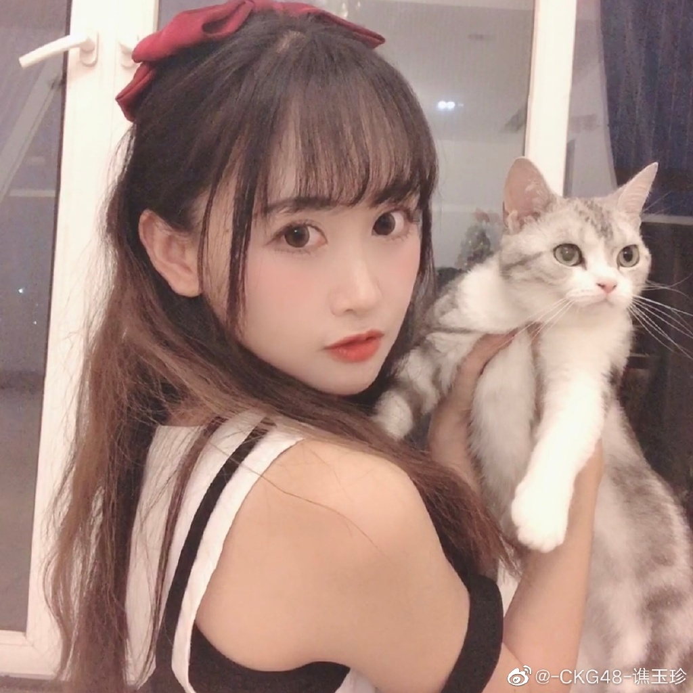

前言
你好！
我是294880776，这是我的个人网站。
感谢你能打开这个网站，以下是些许个人介绍。
我个人有很多兴趣爱好，比如：
- -PC超频相关
- -电子产品、部分家电(半桶水)
- -单机游戏：P社群星、hoi、全战、Skyrim、M&B等
- -网游：WOT、星际公民等
- -吃的
- -SNH48 Group
这是我的微博，欢迎视奸！
Fan Letter - SHY48
- 作曲: BOUNCEBACK
- 编曲: 野中MASA雄一
- 原词: 秋元康
- 作词: 上海星四芭
- 上次见面 还在回忆着
- 一直记得你的头发是什么颜色
- 从过去到现在 我一直都相信着
- 你的梦想 从来不曾褪色
- 桌上的杯垫 咖啡依然还温热
- 我们的距离 到底还有多远呢
- 无论什么时候
- 那一条小河都很清澈
- 树叶散落一地
- 歌声回荡 在雨里
- 无论什么时候
- 我都要带着微笑唱着歌
- 静静注视着你
- 为我们加油 为我们鼓励
- 你的话语 在耳边深刻
- 一路走来 让我们清楚 怎么去选择
- 你的话语 就像会飞的纸鹤
- 让每个愿望 永不会褪色
- 梦想的路上 音乐和海旋转着
- 今天的泪水 我们就让它流到这
- 无论什么时候
- 那一条小河都很清澈
- 树叶散落一地
- 歌声回荡 在雨里
- 无论什么时候
- 我都要带着微笑唱着歌
- 静静注视着你
- 为我们加油 为我们鼓励
- 流过的汗水都还记得
- 我们的梦想 不会轻易割舍
- 漫长无尽的路上
- 就算迷失了方向
- 我们也要鼓起勇气
- 找到我们的阳光
- 有你在
- 无论什么时候
- 那一条小河都很清澈
- 树叶散落一地
- 歌声回荡 在雨里
- 无论什么时候
- 我都要带着微笑唱着歌
- 静静注视着你
- 为我们加油 为我们鼓励
- 有你在 为我们鼓励